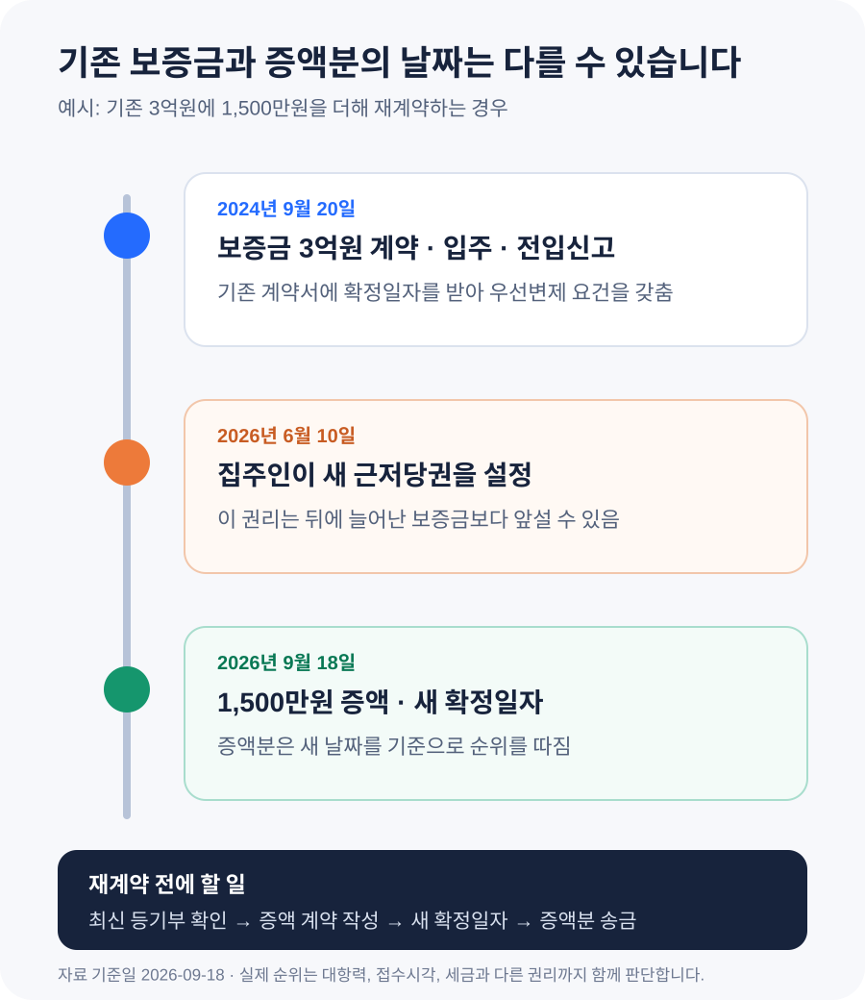

전세 재계약 때 보증금을 올리면 확정일자를 다시 받아야 할까?
기간만 연장하고 보증금이 그대로라면 기존 계약서와 확정일자를 잘 보관하면 됩니다. 보증금을 올린다면 증액 내용을 적은 재계약서나 합의서를 만들고, 그 서류에 새 확정일자를 받는 편이 안전합니다. 기존 보증금은 처음 받은 확정일자의 순위를 유지하지만, 늘어난 금액은 새 확정일자를 기준으로 순위가 정해질 수 있기 때문입니다. 기존 계약서는 새 계약서로 대체해 버리지 말고 두 서류를 함께 보관하세요.
보증금이 그대로라면 확정일자를 새로 받을 필요는 없습니다
계약기간만 2년 더 연장하고 보증금과 월세가 달라지지 않는다면, 처음 계약할 때 받아 둔 확정일자가 사라지는 것은 아닙니다. 임차인이 계속 집을 인도받아 거주하고 주민등록을 유지한다면 기존 대항력과 우선변제권의 기초도 이어집니다. 새 종이에 기간 연장 사실을 적었더라도 원래 계약서와 확정일자 받은 서류를 버리면 안 됩니다.
재계약서를 새로 쓰는 이유는 계약기간과 합의 내용을 명확히 남기기 위해서입니다. 처음 계약서를 폐기하거나 “기존 계약은 모두 종료한다”는 식으로 쓸 이유는 없습니다. 새 서류에 “기존 임대차계약의 보증금과 그 밖의 조건은 그대로 유지하고 기간만 연장한다”는 취지를 적고, 기존 계약일을 함께 표시하면 두 계약의 연결관계를 확인하기 쉽습니다.
별도 서류 없이 묵시적으로 갱신된 경우도 기존 확정일자를 다시 받을 필요는 없습니다. 다만 이사 통보 시점과 계약 종료일 계산이 서면 재계약과 달라질 수 있으므로, 계약갱신과 묵시적 갱신의 차이는 따로 확인하세요.
보증금이 오르면 늘어난 금액을 위해 새 확정일자를 받습니다
확정일자는 계약서가 그 날짜에 존재했다는 사실을 공적으로 확인해 주는 절차입니다. 주택을 인도받고 전입신고를 마친 임차인이 계약서에 확정일자를 갖추면, 주택이 경매나 공매로 넘어갈 때 후순위 권리자보다 보증금을 먼저 변제받을 수 있는 요건을 갖추게 됩니다. 근거는 주택임대차보호법 제3조의2입니다.
처음 보증금 3억원에 받은 확정일자가 있다고 해서 나중에 올린 1,500만원까지 과거 날짜로 보호되는 것은 아닙니다. 법제처 찾기쉬운 생활법령정보도 임대차 기간 중 또는 갱신 때 보증금을 증액했다면 증액분에 대해 다시 확정일자를 받아 우선변제권을 취득해야 한다고 안내합니다.
여기서 중요한 점은 기존 보증금의 날짜와 증액분의 날짜가 서로 다를 수 있다는 것입니다. 기존 3억원은 처음 확정일자를 받은 순위가 유지되고, 추가 1,500만원은 새 재계약서에 확정일자를 받은 때의 순위를 따집니다. 그래서 보증금을 올리기로 합의했다고 바로 송금하기보다, 그사이에 새 근저당권이나 압류가 생기지 않았는지 먼저 확인해야 합니다.
증액분을 보내기 직전에 등기부를 다시 확인하세요
처음 계약할 때 등기부를 확인했어도 재계약 시점에는 상황이 달라질 수 있습니다. 집주인이 주택담보대출을 새로 받았거나 압류·가압류가 등기됐을 수 있기 때문입니다. 재계약 협의를 시작한 날 한 번, 증액분을 보내는 날 다시 한 번 등기사항증명서의 갑구와 을구를 확인하세요.
- 소유자 — 계약 상대방과 현재 등기부 소유자가 같은지 확인합니다. 공동소유라면 임대 권한과 서명 주체도 확인합니다.
- 근저당권 — 기존 계약 뒤 새로 설정된 근저당권의 접수일, 채권최고액과 채권자를 봅니다.
- 압류·가압류·경매 — 갑구에 새로운 제한이 생겼다면 증액 송금을 멈추고 회수 가능성을 다시 따져야 합니다.
- 주택가격과 선순위 채권 — 시세에서 선순위 담보와 선순위 임차보증금 등을 뺀 금액으로 내 보증금을 감당할 수 있는지 보수적으로 봅니다.
새 근저당권이 있다고 해서 재계약이 법적으로 불가능한 것은 아닙니다. 다만 그 권리가 증액분의 새 확정일자보다 앞설 수 있습니다. 집값 하락이나 경매 비용까지 고려했을 때 추가 보증금을 돌려받기 어렵다고 판단되면 증액 대신 월세 조정, 보증금 동결, 보증가입 가능 여부 확인 같은 다른 조건을 협의할 수 있습니다.
재계약서는 원래 계약과 달라진 내용을 정확히 연결해 적습니다
보증금을 올릴 때 반드시 처음부터 새 양식으로 전부 다시 쓸 필요는 없습니다. 새 임대차계약서를 작성해도 되고, 기존 계약서에 연결되는 증액 합의서나 특약서를 만들어도 됩니다. 어느 형식이든 누가, 어떤 집을, 어느 계약에서, 얼마를 올리고, 언제 지급하며, 나머지 조건은 어떻게 유지하는지가 분명해야 합니다.
| 적을 내용 | 확인할 점 | 예시 |
|---|---|---|
| 기존 계약 | 계약일, 주소, 임대인·임차인 | 2024년 9월 20일 체결한 임대차계약 |
| 기존·증액·총보증금 | 세 금액을 따로 표시 | 3억원 + 1,500만원 = 3억1,500만원 |
| 지급일과 계좌 | 확인되지 않은 제3자 계좌 금지 | 2026년 9월 20일 임대인 명의 계좌 |
| 새 계약기간 | 시작일과 종료일을 날짜로 표시 | 2026년 9월 20일~2028년 9월 19일 |
| 나머지 조건 | 기존 계약의 효력이 이어짐을 명시 | 변경하지 않은 조항은 기존 계약과 동일 |
중개업소를 거치지 않고 당사자끼리 재계약할 수도 있지만, 이름과 주소만 바꾸거나 인터넷 양식을 그대로 복사하면 기존 계약과의 관계가 불분명해질 수 있습니다. 집주인이 바뀌었거나 공동명의, 대리계약, 법인 임대인처럼 서명 권한이 복잡하다면 신분·위임관계를 먼저 확인하세요. 계약금이나 증액분은 계약 상대방과 계좌 명의가 일치하는지 확인한 뒤 보내고 이체확인증을 보관합니다.
기존 3억원과 추가 1,500만원의 순위는 같지 않을 수 있습니다
아래는 날짜에 따라 무엇이 달라지는지 보여 주는 예시입니다. 실제 배당 순위와 회수액은 대항력 발생일, 등기 접수시각, 세금과 다른 임차인, 주택가격 등까지 함께 따져야 합니다.
| 날짜 | 생긴 일 | 의미 |
|---|---|---|
| 2024-09-20 | 보증금 3억원 계약, 입주·전입신고 | 대항력의 기초를 갖춤 |
| 2024-09-20 | 기존 계약서 확정일자 | 3억원의 우선변제 순위를 판단할 기준 |
| 2026-06-10 | 집주인이 근저당권을 새로 설정 | 증액분보다 앞설 수 있는 권리 |
| 2026-09-18 | 보증금 1,500만원 증액 재계약·새 확정일자 | 증액분은 이 날짜를 기준으로 순위 판단 |
이 예시에서는 기존 3억원이 2024년 순위를 그대로 유지하더라도, 2026년 6월 근저당권이 9월에 늘어난 1,500만원보다 앞설 가능성이 있습니다. “원래 전세 계약이 먼저였으니 추가 금액도 전부 먼저다”라고 생각하면 안 되는 이유입니다.

임대차 신고 대상이라면 신고하면서 확정일자도 함께 확인할 수 있습니다
주택 임대차 신고제는 임대차계약의 보증금·월세·기간 등을 관할 기관에 신고하는 제도입니다. 국토교통부 부동산거래관리시스템 안내에 따르면 신고지역의 주택에서 보증금이 6천만원을 초과하거나 월세가 30만원을 초과하는 계약은 신고 대상이며, 신규계약뿐 아니라 금액이 달라지는 갱신계약도 포함됩니다. 금액 변동이 없는 갱신계약은 신고 대상에서 제외됩니다.
신고 대상 계약은 계약 체결일부터 30일 안에 임대인과 임차인이 공동으로 신고하는 것이 원칙입니다. 한쪽이 계약서를 제출해 신고할 수도 있습니다. 주민센터를 방문하거나 부동산거래관리시스템에서 신고할 수 있으며, 임대차계약서를 제출해 신고가 접수되면 확정일자가 부여됩니다. 처리 뒤 신고필증에 확정일자 번호가 표시됐는지 확인하고 보관하세요.
모든 재계약이 임대차 신고 대상인 것은 아닙니다. 신고지역·금액 기준에서 벗어나거나 금액 변동 없는 갱신이라 신고하지 않는 경우에는, 증액분이 있다면 확정일자를 별도로 받아야 합니다. 주민센터나 등기소 방문, 전자계약 등 이용 가능한 방법을 확인하세요. 국토교통부 전자계약시스템으로 주택 임대차계약을 체결하면 확정일자 신청과 임대차 신고가 연계됩니다.
신고를 했다는 사실만 믿고 끝내지 말고 처리상태와 확정일자 번호를 확인하는 것이 좋습니다. 주소나 금액을 잘못 입력했거나 반려됐다면 원하는 날짜에 절차가 끝나지 않을 수 있습니다. 계약서 원본, 신고필증과 접수 결과를 함께 보관하세요.
보증보험과 전세대출은 자동으로 증액되지 않습니다
기존에 전세보증금반환보증에 가입했더라도 보증금이 늘었다고 보증한도까지 자동으로 커지는 것은 아닙니다. 보증기관에 계약 변경과 증액 사실을 알리고 변경 또는 증액 심사가 필요한지, 새 보증금 전액이 보장되는지 확인해야 합니다. 주택가격과 선순위 채권 비율에 따라 증액분이 보증되지 않을 수도 있으므로 먼저 돈을 보낸 뒤 알아보는 순서는 피하세요.
전세대출도 마찬가지입니다. 만기 연장과 증액 대출은 별도 심사일 수 있고, 은행이 요구하는 재계약서·확정일자·임대차 신고필증이 다를 수 있습니다. 대출 만기보다 늦게 은행에 알리면 일정이 꼬일 수 있으므로 재계약 협상 단계에서 은행과 보증기관에 필요한 서류와 신청기한을 확인하세요.
자주 헷갈리는 질문
새 계약서에 확정일자를 받으면 예전 확정일자는 없어지나요?
새 확정일자를 받았다는 이유만으로 기존 계약서의 확정일자가 자동으로 없어지는 것은 아닙니다. 다만 기존 보증금의 과거 순위를 설명하려면 처음 계약서와 당시 확정일자 자료가 필요합니다. 원본 두 벌을 함께 보관하고 새 계약서가 기존 계약의 갱신·증액이라는 점을 분명히 적으세요.
재계약서를 통째로 새로 쓰면 안 되나요?
새로 작성해도 되지만 기존 계약을 단순히 대체한 것처럼 보이지 않게 원계약일과 기존 보증금, 증액분, 유지되는 조항을 적는 편이 좋습니다. 처음 계약서는 폐기하지 않습니다. 핵심은 종이의 이름보다 기존 권리와 변경 내용을 연결해 입증할 수 있는지입니다.
보증금을 5%보다 많이 올리기로 서로 합의하면 무조건 무효인가요?
주택임대차보호법의 차임·보증금 증액청구 제한, 계약갱신요구권 행사 여부와 당사자의 합의 과정은 구체적 상황에 따라 쟁점이 달라집니다. 확정일자를 받는 절차와 증액 상한 문제는 별개입니다. 5%를 넘는 증액을 요구받았다면 바로 송금하지 말고 갱신요구권과 증액 제한을 확인한 뒤 상담받으세요.
보증금을 낮춘 재계약도 새 확정일자가 필요한가요?
증액분을 새로 보호할 문제는 없지만, 변경된 보증금과 기간을 서면으로 남기고 신고 대상이면 변경 신고를 해야 할 수 있습니다. 보증보험·전세대출 금액도 함께 조정되는지 확인하세요. 기존 계약서와 감액 합의서는 계속 보관합니다.
재계약 전후 체크리스트
- □ 보증금과 월세가 그대로인지, 얼마가 달라지는지 숫자로 확인했다.
- □ 증액분 송금 직전에 최신 등기사항증명서의 갑구·을구를 다시 확인했다.
- □ 기존 계약일, 기존 보증금, 증액분, 새 총보증금과 지급일을 재계약서에 적었다.
- □ 변경하지 않은 조건은 기존 계약대로 유지된다는 문구를 확인했다.
- □ 기존 계약서와 처음 받은 확정일자 자료를 폐기하지 않았다.
- □ 증액 재계약서에 새 확정일자를 받고 처리 결과를 보관했다.
- □ 임대차 신고 대상이면 계약일로부터 30일 안에 신고하고 신고필증의 확정일자 번호를 확인했다.
- □ 전세보증과 전세대출 기관에 계약 변경·만기 연장·증액 절차를 확인했다.
- □ 임대인과 계좌 명의를 확인하고 증액분 이체확인증을 보관했다.
공식 자료
- 국가법령정보센터 — 주택임대차보호법 제3조의2(보증금의 회수)
- 국가법령정보센터 — 주택임대차보호법 제7조(차임 등의 증감청구권)
- 국가법령정보센터 — 부동산 거래신고 등에 관한 법률 제6조의2(주택 임대차 계약의 신고)
- 국가법령정보센터 — 같은 법 시행령 제4조의3(신고지역 및 금액)
- 법제처 찾기쉬운 생활법령정보 — 보증금 증액과 확정일자
- 국토교통부 부동산거래관리시스템 — 주택 임대차 신고 안내
- 국토교통부 부동산거래 전자계약시스템 — 임대차 전자계약 안내
정보 기준일: 2026-09-18. 이 글은 일반적인 주택 임대차 재계약을 위한 정보입니다. 대항력 발생일, 선순위 담보·세금·다른 임차인, 주택 유형과 보증·대출 조건에 따라 실제 회수 가능성과 절차가 달라질 수 있습니다. 증액분을 보내기 전 최신 등기부와 보증기관·금융기관 조건을 확인하고, 권리관계가 복잡하면 전문가의 개별 검토를 받으세요.
재계약 전에 함께 확인하세요
- 전세가율 계산기매매가 대비 보증금 비율과 기본 위험 신호 확인
- 전월세 계약 체크리스트등기부·특약·신고와 잔금 전 확인사항